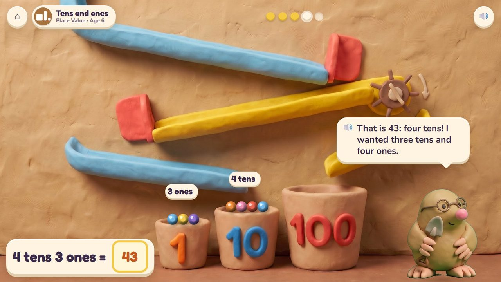
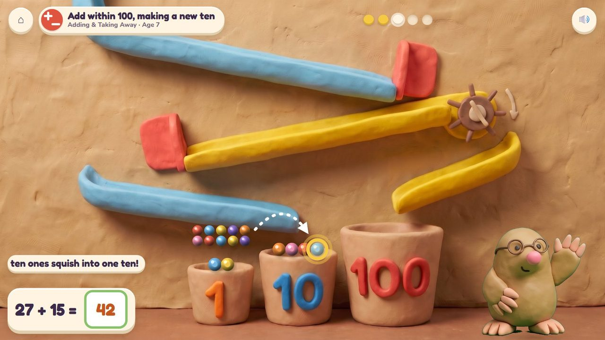
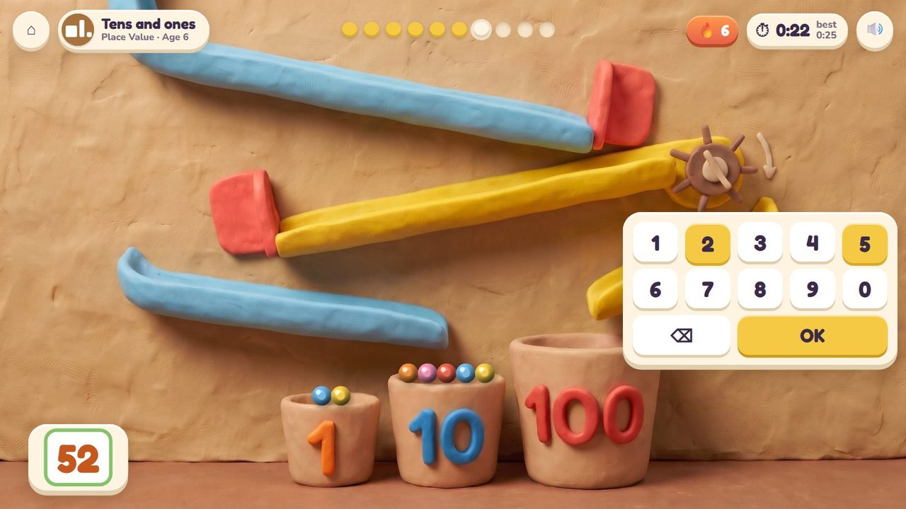
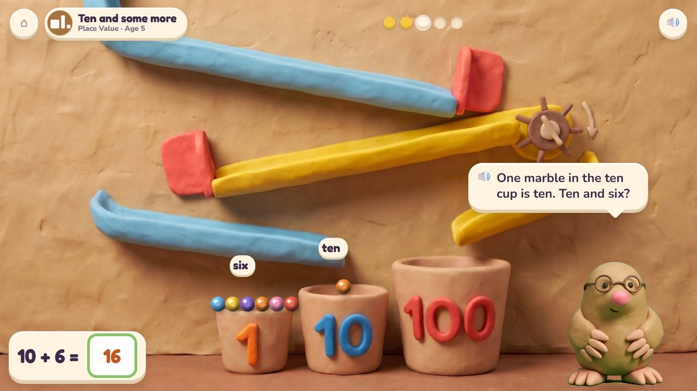
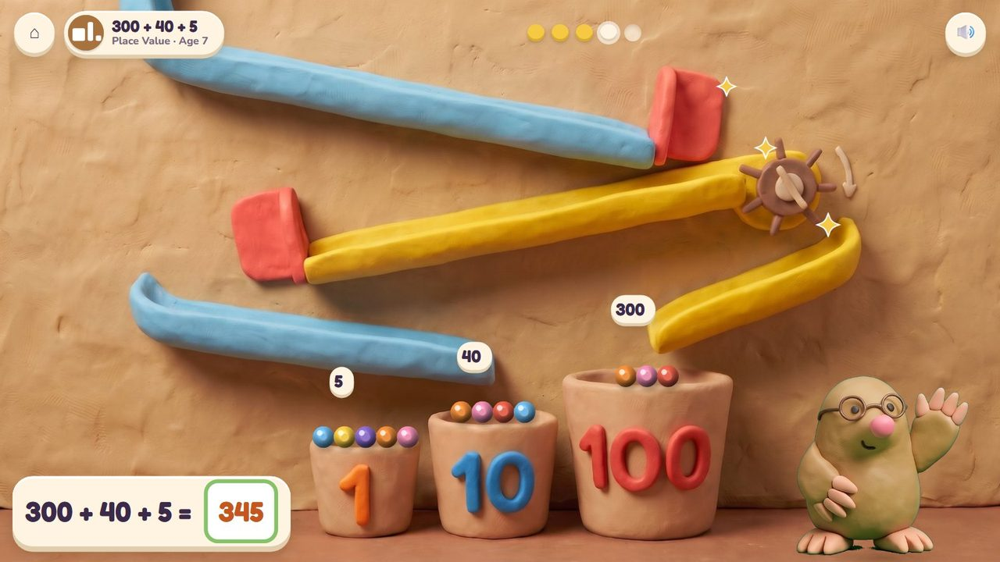

Marble Run
Open the gates so the marbles land in the 1, 10 and 100 cups and make Digsy's number.
13 lessons (7 taught here first, the rest practised here) in 2 topics:
Adding & Taking AwayPlace Value

The game
A big clay marble run on the workshop wall. A marble that lands in the 1 cup counts one, in the 10 cup ten, in the 100 cup a hundred. Digsy asks for a number; the child opens the gates and drops marbles. When ten land in one cup, they squish into ONE marble that rolls on to the next cup: carrying, seen.
Hands-on
Tap a gate to open it; drop marbles; watch ten squish into one.
The end of a round
A perfect run lights up the whole machine.
How it plays
A storyboard of the game in one lesson, drawn from the app's own clay pictures.
1Digsy's number
Tens and ones, age 6: make 34: three marbles in the 10 cup, four in the 1 cup.
🔊 “Make thirty-four! Open the gates.”

2A mix-up
Four tens and three ones is 43, not 34.
🔊 “That is 43: four tens! I wanted three tens and four ones.”

3Ten squish into one
Age 7: 27 + 15: twelve ones; ten squish into one ten: 42.

4The quick round
The marbles have landed: type 52. Timed.
The quick round (from age 6)
The marbles have landed: type the number (5 tens and 2 ones: 52). Ten questions at 6-7, a 60-second round from 8; your time and your best on screen; only right answers count; a miss shows the answer and comes back later. No clock under 6.
The same game, other lessons and ages
The badge at the top left says the topic, the lesson and the age.

5Ten and some more · age 5
One marble in the 10 cup is ten: ten and six is 16.

6300 + 40 + 5 · age 7
Three in the 100 cup, four in the 10 cup, five in the 1 cup: 345.
From age 5 to 7
| Age 5Kindergarten | Ten and some more: one marble in the 10 cup and some in the 1 cup. |
| Age 6Grade 1 | Tens and ones; add tens; add a two-digit and a one-digit number; add three numbers. |
| Age 7Grade 2 | Add within 100 and 1000, making a new ten; 300 + 40 + 5; 100 is ten tens; why it works. |
What changes from lesson to lesson
The cups
1 and 10 at 5 and 6; then the 100 cup
The task
make a number; add two runs; ten squish into one
Help
Digsy counts the cups aloud; after a miss the marbles are counted cup by cup
How you answer
gates and drops; the number pad for the quick round
Its 13 lessons
Age by age they are on the full list; here grouped by topic (the first activity named teaches a lesson, the others practise it).
Adding & Taking Away 6
- Add three numbers
1.OA.2Boat Load · Marble Run - Add within 100
2.NBT.5Marble Run · Number Lift - Add within 100, making a new ten
2.NBT.5Marble Run · Poke Pals - Add up to four numbers
2.NBT.6Boat Load · Marble Run · Treasure Shop - Add within 1000
2.NBT.7Marble Run · Number Lift - Why does it work?
2.NBT.9Seesaw Twins · Marble Run
Place Value 7
- Ten and some more
K.NBT.1Poke Pals · Marble Run - Tens and ones
1.NBT.2Marble Run · Number Lift - Tens: 10, 20 ... 90
1.NBT.2Number Lift · Marble Run - Add a two-digit and a one-digit number
1.NBT.4Marble Run · Poke Pals - Add tens
1.NBT.4Marble Run · Number Lift - 100 is ten tens
2.NBT.1Number Lift · Marble Run - 300 + 40 + 5
2.NBT.3Marble Run · Number Lift
Questions
- Is "ten marbles squish into one" a clear way to show carrying?
- Anything in the storyboard to change (say the frame number)?